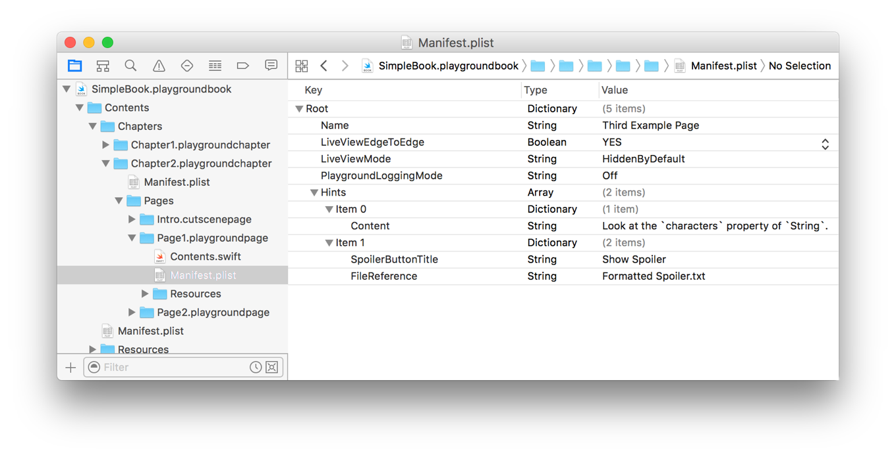
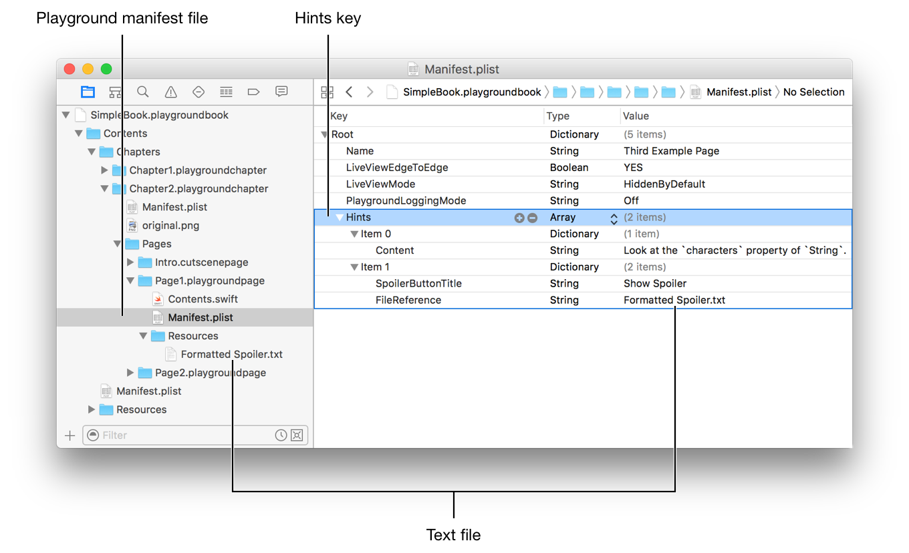
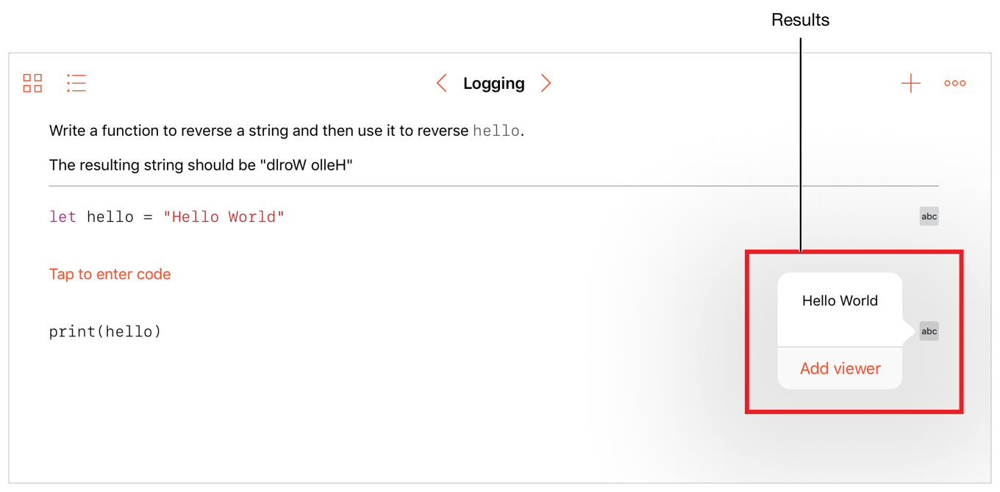
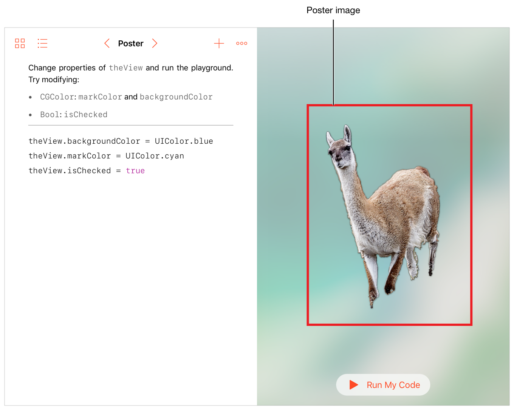

Playground Page Manifest
プレイグラウンドページマニフェスト
The Manifest.plist file for a playground page contains the following key-value pairs specifying the attributes for a page:
プレイグラウンドページのためのManifest.plistファイルは、以下のキー値ペアを含んでいて、あるページの属性を指定します：
Live view configuration
ライブビュー設定Playground logging configuration
プレイグラウンドログ設定Static hints
静的なヒントUser-viewable name for the page
ユーザに見られるページの名前
The file is located at the top level of the .playgroundpage folder for the page.
このファイルは、そのページのための.playgroundpageフォルダの最上位に位置します。
Key List
キーのリスト
Table 5-1 describes each key for a playground page, its type, and whether the key is required.
表 5-1 は、プレイグラウンドページのための各キー、それの型、そしてそのキーが必須とされるかどうかを記述します。
Key
|
Type
|
Description
|
Required
|
|---|---|---|---|
|
Array of dictionaries
|
An array of static hints and optional spoilers. See Hints Key.
|
|
|
Boolean |
Sets the live view to extend past the margin in the area used for live views. See LiveViewEdgeToEdge Key.
|
✓ |
|
String |
Sets the live view to show even when it is not running. See LiveViewMode Key.
|
✓ |
|
String |
The name displayed in the user interface. See Name Key.
|
✓ |
|
String |
Controls the display of results in playground pages. See PlaygroundLoggingMode Key.
|
|
|
String |
An image shown before the live view runs. See PosterReference Key.
|
|
Figure 5-1 shows an example property list using the keys available in the playground page manifest file.
図 5-1 は、プレイグラウンドページマニフェストファイルにおいて利用可能なキーを使って、例プロパティリストを示します。
図 5-1 プレイグラウンドページマニフェストプロパティリスト 
Hints Key
Hintsキー
An array of the initial formatted hints for a page that are shown when the user taps the Hint button. Hints can include a spoiler button that the user taps to see the hint text. Hints are shown in a popover, in the same order in which they occur in the array. You can dynamically update the hints for a page using the fail case of the AssessmentStatus Enumeration.
あるページのための初めから書式設定されたヒントの配列で、ユーザがHintボタンをタップするとき表示されます。ヒントはスポイラーボタンを含むことができ、ユーザがタップすることでヒントテキストを見ます。ヒントはポップオーバーにおいて、それらが配列に現れるのと同じ順序で、表示されます。あなたは、あるページのヒントを動的に更新することがAssessmentStatus列挙のfailケース節を使って行えます。
Each hint is represented by a dictionary in the array. Hints are formatted using markup, and no special comment delimiters are required. For more information on markup, see Markup Formatting Reference.
各ヒントは、配列の中の１つのディクショナリによって表されます。ヒントはマークアップを使って書式設定され、特別なコメント区切り記号は必要とされません。マークアップに関するさらなる情報として、Markup Formatting Referenceを見てください。
Adding a Hints key to the manifest file for a playground page shows a Hint button, such as the one at the lower right of Figure 5-2. Tapping the button opens a popover that shows the hints.
１つのHintsキーをあるプレイグラウンドページのためのマニフェストファイルに追加すると、Hintボタンが現れます、図 5-2 右下のもののように。ボタンをタップすると、ポップオーバーが開いてヒントを示します。
図 5-2 ヒントボタン

A hint dictionary specifies the text for a hint and an optional spoiler button title. Each hint dictionary must specify either a Content Key or a FileReference Key.
ヒントディクショナリは、ヒントのためのテキストおよび任意のスポイラーボタンタイトルを指定します。各ヒントディクショナリは、ContentキーまたはFileReferenceキーのどちらかを指定しなければなりません。
Key
|
Type
|
Description
|
|---|---|---|
|
String |
The formatted text for the hint shown in the popover. See Content Key.
|
|
String |
A file in the |
|
String |
The title for a spoiler button. See SpoilerButtonTitle Key.
|
Content Key
Contentキー
The text for the hint shown in the popover. A hint dictionary with a Content key can't also contain a FileReference key.
ポップオーバーにおいて表示されるヒントのためのテキスト。Contentキーを持つヒントディクショナリは、さらにまたFileReferenceキーを含むことはできません。
FileReference Key
FileReferenceキー
The file path for a text file in the Resources folder that contains the hint text shown in the popover. The text is formatted using markup, and no special comment delimiters are required. A hint dictionary with a FileReference key can't also contain a Content key. The file path is relative to the Resources folder of the page.
Resourcesフォルダの中のあるファイルに対するファイルパスで、ポップオーバーにおいて表示されるヒントテキストを含みます。テキストはマークアップを使って書式設定され、特別なコメント区切り記号は必要とされません。FileReferenceキーを持つヒントディクショナリは、さらにまたContentキーを含むことはできません。ファイルパスはページのResourcesフォルダに相対的です。
SpoilerButtonTitle Key
SpoilerButtonTitleキー
The title for a spoiler button. Including this key shows a spoiler button with the specified title in the popover instead of the hint. Touching the spoiler button displays the hint. Any hint can have a spoiler button.
スポイラーボタンのタイトル。このキーを含むことで、ヒントではなくポップオーバーにおいて指定されたタイトルを持つスポイラーボタンが現れます。スポイラーボタンにタッチするとヒントが表示されます。どんなヒントもスポイラーボタンを持つことができます。
Hints Example
Hintsの例
Figure 5-3 shows the property list editor with Hints set to an array of two items, and the text file in the Resources folder that is associated with the FileReference key.
図 5-3 は、２つの項目のリストに設定されるHintsを持つプロパティリストエディタ、そしてResourcesフォルダの中のFileReferenceキーと結びつけられるテキストファイルを示します。
図 5-3 Hintsキー 
The two dictionaries in the Hints array generate the three hints shown in Figure 5-4. The top hint is created from the Content key in the first array item. The bottom two hints are created from the second array item. The middle hint is a spoiler button that uses the title in the SpoilerButtonTitle key. Tapping the spoiler button shows the bottom hint, which is loaded from the Formatted Spoiler.txt file specified in the FileReference key.
Hints配列の中の２つのディクショナリは、図 5-4で示される３つのヒントを生成します。１番上のヒントは、最初の配列項目でのContentキーから作成されます。１番下の２つのヒントは、２番目の配列項目から作成されます。真ん中のヒントは、スポイラーボタンです、それはSpoilerButtonTitleキーにおけるタイトルを使います。スポイラーボタンをタップすることで、１番下のヒントが現れます、それはFileReferenceキーにおいて指定されるFormatted Spoiler.txtファイルからロードされます。
図 5-4 ヒントとスポイラー

LiveViewEdgeToEdge Key
LiveViewEdgeToEdgeキー
A Boolean controlling the initial size of the live view. Setting the key to true expands the live view to fill the live view area, which includes the Run button and the Hints button. These buttons overlay the live view.
ライブビューの初期サイズを制御するブール。キーをtrueに設定することで、ライブビューをライブビューエリアいっぱいに展開します、それはRunボタンとHintsボタンを含みます。それらのボタンはライブビューにオーバーレイします。
Figure 5-5 shows how the value of LiveViewEdgeToEdge changes the size of the live view. The playground page on the left side of the figure uses a value of NOfalse. The page on the right side of the figure uses a value of YEStrue.
図 5-5 は、どのようにLiveViewEdgeToEdgeの値がライブビューのサイズを変更するかを示します。図の左側でのプレイグラウンドページはNOfalseの値を使います。図の右側でのページはYEStrueの値を使います。
LiveViewEdgeToEdge key value図 5-5
LiveViewEdgeToEdgeキーの値の効果

LiveViewMode Key
LiveViewModeキー
Used to control the display of the live view area while the live view is not running.
ライブビューが動作していない間ずっとライブビューエリアの表示を制御しています。
The possible values for LiveViewMode are:
LiveViewModeに対して可能な値は：
VisibleByDefault. Shows the live view when the playground opens.
VisibleByDefault。プレイグラウンドが開くときライブビューを表示する。HiddenByDefault. Hides the live view until the playground is run.
HiddenByDefault。プレイグラウンドが実行されるまでライブビューを隠す。
Figure 5-6 shows how the value of LiveViewMode affects the initial display of a live view area. The playground page on the left side of the figure uses a value of VisibleByDefault. The page on the right side of the figure uses a value of HiddenByDefault.
図 5-6 は、どのようにLiveViewModeの値がライブビューエリアの初期表示に影響するかを示します。図の左側でのプレイグラウンドページは、VisibleByDefaultの値を使います。図の右側でのページはHiddenByDefaultの値を使います。
図 5-6 ライブビューモードキー値の効果

Name Key
Nameキー
The display name of the playground page in the user interface; for example, the name of a page in the table of contents.
ユーザインターフェイスの中のプレイグラウンドページの表示名；例えば、目次でのあるページの名前。
The name is also used as part of the link to the first use of a glossary term. (See PageReference Key in Glossary Property List.)
名前はまた、ある語彙集用語の最初の利用に対するリンクの一部として使われます。（PageReference KeyをGlossary Property Listで見てください。）
In Figure 5-7, Example Page is the name of the playground page in the table of contents.
図 5-7では、Example Pageは目次におけるプレイグラウンドページの名前です。
図 5-7 目次でのプレイグラウンドページ。

PlaygroundLoggingMode Key
PlaygroundLoggingModeキー
Controls the display of results for executed playground statements.
実行されたプレイグラウンド文の結果の表示を制御します。
The possible values for PlaygroundLoggingMode are:
PlaygroundLoggingModeに対して可能な値は：
Off. Playground logging is off and no results are displayed.
Off。プレイグラウンドログはオフです、そして結果は表示されません。Normal. (Default value) Playground logging is on and results are displayed.
Normal。（省略時の値）プレイグラウンドログはオンです、そして結果は表示されます。
Figure 5-8 shows a playground with results for each of the executed statements. The user can tap the result to view the value, and then can add an inline result viewer. Turning off logging can speed up execution of playgrounds.
図 5-8 は、実行された文それぞれの結果とともにプレイグラウンドを示します。ユーザは結果をタップすることで値を見ることができます、そしてそれからインライン結果ビューアに加えることができます。ログをオフに切り替えることで、プレイグラウンドの実行をスピードアップできます。
図 5-8 プレイグラウンドの結果。 
PosterReference Key
PosterReferenceキー
The base name of an image file that is shown centered and unscaled in the live view area before the live view runs. The image file can be in any Resources folder in the book. The book package can contain multiple resolutions of the same image. For more information on multiple resolutions, see Loading Image Resources in Resource Programming Guide.
ライブビューが動作する前にライブビューエリアにおいて真ん中にサイズ調節されずに表示されるある画像ファイルのベース名。画像ファイルは、ブックの中のどのResourcesフォルダの中にあっても構いません。ブックパッケージは、複数の解像度の同じ画像を含むことができます。複数の解像度に関するさらなる情報として、Loading Image ResourcesをResource Programming Guideで見てください。
Use PosterReference Key to show a small image such as a logo, or a large image that works for multiple screen sizes because the live view area can be resized.
PosterReference Keyを使って、ロゴなどの小さな画像を、または複数の画面サイズで機能する大きな画像を表示してください、なぜならライブビューエリアはリサイズされることができるからです。
In Figure 5-9, Llama logo.png is used to show a Llama in the center of the live view area of the playground page.
図 5-9では、Llama logo.pngはプレイグラウンドページのライブビューエリアの中心でラマを表示します。
図 5-9 ライブビューポスター画像 
Cutscene Page Manifest
カットシーンページマニフェスト
Copyright © 2016 Apple Inc. All rights reserved. Terms of Use | Privacy Policy | Updated: 2016-10-24